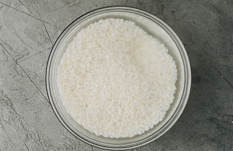
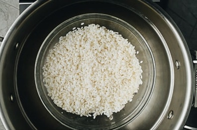
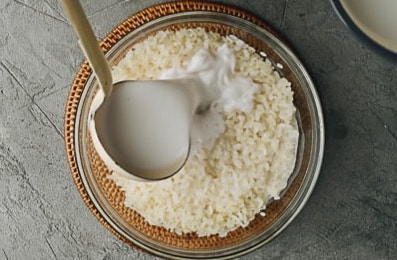
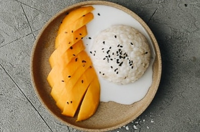

Mango sticky rice is a healthy and satisfying dessert featuring sweet gooey sticky rice served with a luscious coconut sauce and sliced mango. It is a popular Thai dessert that you can easily find at most Thai restaurants. But the homemade version contains less sugar, tastes just as satisfying, and is quite easy to prepare. (Gluten-Free, Vegetarian, Vegan)
Prep Time
10 minute
Cook Time
30 minute
Pre-Soak Time
1 hour
Total Time
1 hour 40 minutes
Servings
4 to 6 servings
Ingredients
Instructions
-
1. Preparation
Rinse the sticky rice with tap water and use your hand to gently stir it. Drain the water to remove the excess starch. Repeat once, then add cold water to cover. Soak the sticky rice for a minimum of 1 hour, or up to overnight in the fridge. Once soaked, rinse again and drain the water. (*Footnote 3)
 -
2. Cooking the Rice
Transfer the rice to a heatproof bowl, add about 2" of water to your steamer (not into the rice), place the heatproof rice bowl on the steaming rack in the steamer, and cover the steamer. Turn to medium-high heat to bring the water to a boil. When the steam starts to come out of the pot, turn to medium heat. Steam for 20 to 25 minutes, until the rice is cooked through, with no hard raw bits in the middle. Remove the pot from the stove. Let sit, covered, while you prepare the other ingredients.
 -
3. Making the Sauce
Make the sauce when the rice is cooking. Combine the coconut milk, sugar, and salt in a saucepan. Cook over medium heat or medium-low heat until the mixture is hot and the sugar is melted. Do not bring the coconut sauce to a boil.
-
4. Thickening the Sauce (Optional)
(Optional) If the coconut milk you're using is thin: Combine the cornstarch and 4 tablespoons of water in a small bowl. Stir to completely dissolve the cornstarch. Add half of the slurry to the sauce. Stir immediately to thicken the sauce. You can adjust the thickness of the sauce by slowly adding a bit more water or cornstarch slurry, if needed. The sauce shouldn't be too thick, but should coat the back of a spoon. (*Footnote 4)
-
5. Mixing Rice and Sauce
Carefully remove the bowl of sticky rice from the steamer with your oven mitts on. Pour 1 cup of the sauce into the bowl. Stir to mix well until the sauce is fully absorbed.
 -
6. Serving and Storage
The mango sticky rice is ready to serve when the rice mixture and the sauce cool to room temperature or lukewarm.
To serve, transfer 1/3 cup of the coconut rice to each of several small serving bowls or plates. Place the sliced mango on the side. Pour a few spoonfuls of the extra coconut sauce on top of the rice. Garnish with toasted sesame seeds, if using. (*Footnote 5)
For serving later: It's important to note that mango sticky rice tastes the best when it's freshly made, so I would highly recommend making it the same day you plan to serve it. If you have to make mango sticky rice beforehand, you should store the rice and sauce separately in the fridge. Before serving, gently heat the rice in the microwave or a steamer until warmed through and softened. Otherwise, the rice will have a very tough and dry texture.

Tips and Notes
- Sticky rice, often called glutinous rice or sweet rice, is gluten-free. The cooked grains are semi-opaque and have a gooey sticky texture when cooked. The texture of sticky rice is quite different from that of regular rice, and it is the only authentic type of rice to use in mango sticky rice. You can find it at most Asian markets and online.
- You can use any type of ripe mango. They are key to creating the best mango sticky rice. If your mangoes are still tough, simply store them at room temperature to let them ripen further before cutting them. Once the mangoes get soft, transfer them to the fridge so they will stay fresh without over ripening.
- To achieve the best results, you should always soak the rice beforehand and then steam it. If you prefer a very gooey and sticky texture, soak the rice overnight in the fridge. I personally prefer a chewier texture for my sticky rice, so I usually only soak it for 1 to 2 hours the day I make the dessert.
- Most of the time you don't need the cornstarch slurry to thicken the sauce, since the coconut milk should have a nice creamy texture. But I've come across some brands of coconut milk that have a thinner consistency. Or sometimes you might prefer a thicker sauce. In this case, adding cornstarch will give the sauce a nicer texture.
- 1/3 cup rice with half a mango creates a great dessert size. But if you prefer a larger dessert or want to serve this one as a standalone snack, you can use 1/2 cup rice per serving to make 4 servings in total.
Enjoy!
Nutrition
Serving: 1 serving
Calories: 288kcal, Carbohydrates: 42.4g, Protein: 3.1g, Fat: 12.9g, Saturated Fat: 11.1g, Sodium: 276mg, Potassium: 191mg, Fiber: 2.8g, Sugar: 24.9g, Calcium: 13mg